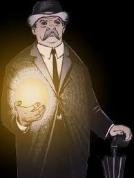

About The Presence
The Presence is a major character in the DC Universe and he is base on the judo-chirstan God of the same name. The character debuted in More Fun Comics #52 (February 1940), and was created by Jerry Siegel and Bernard Baily The religious cosmology of the multiverse is complex, with many pantheons of gods co-existing alongside each other.
Lucifer
As his creator, the Presence mostly features as an idea that Lucifer struggles against throughout the series as he believes that he has no free will as long as he has any connection to the Presence and it's creation, while the Presence argues that Lucifer's own actions are proof of it not being true.
Much of the series also revolves around the Presence vacating its own creation and Lucifer subtly guiding its replacement Elaine Belloc to take its place.
When it's appeared in person, the Presence has appeared as an aging gentleman wearing a bowler hat, dark suit, umbrella and with a grey mustache.